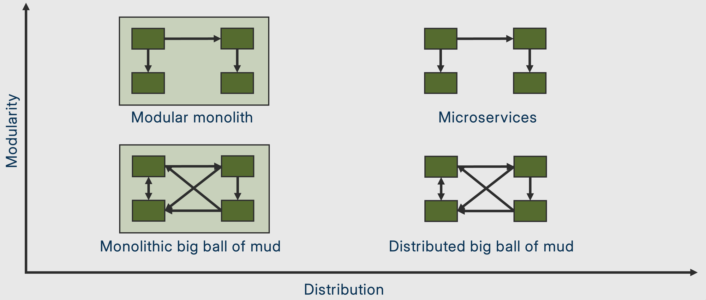
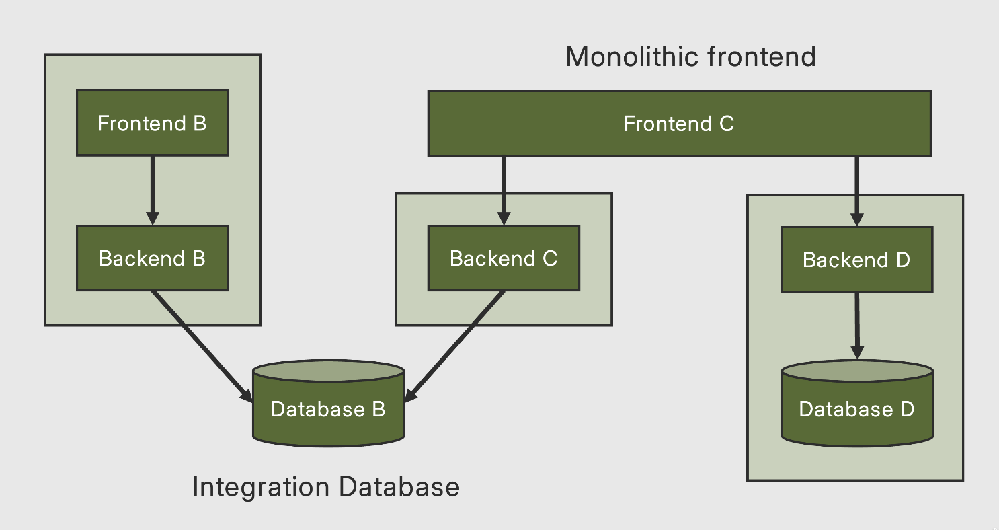

Build a realistic microservices system from scratch
Simon Martinelli • martinelli.ch
Spring Boot 4.0 Spring Cloud 2025.1 Java 25
| Time | Topic |
|---|---|
| 08:30 – 09:00 14:30 – 15:00 CEST | Open Networking |
| 09:00 – 09:45 15:00 – 15:45 CEST | Microservices Foundations Teaching (20 min) • Hands-on (25 min) |
| 09:45 – 09:55 15:45 – 15:55 CEST | Q & A |
| 09:55 – 10:40 15:55 – 16:40 CEST | Service Discovery & API Gateway Teaching (20 min) • Hands-on (25 min) |
| 10:40 – 10:50 16:40 – 16:50 CEST | Q & A |
| 10:50 – 11:35 16:50 – 17:35 CEST | Configuration & Resilience Teaching (20 min) • Hands-on (25 min) |
| 11:35 – 11:45 17:35 – 17:45 CEST | Q & A |
| 11:45 – 12:30 17:45 – 18:30 CEST | Observability & Wrap-up Teaching (20 min) • Hands-on (25 min) |
| 12:30 – 12:45 18:30 – 18:45 CEST | Final Discussion & Open Q&A |
Setup Verification
java -version # Java 25+
mvn -version # Maven 3.9+
docker info # Docker Desktop running
git --version # Git installed# From the project root
mvn clean compile
# Start a service
mvn -pl catalog-service spring-boot:runOpen http://localhost:8081/api/books — expect a 404 (not implemented yet)
Your starting point
git checkout mainThe complete solution
git checkout solutionmain — only peek at solution when needed!
Microservices Mental Model
An independently deployable service organized around a business capability, owning its own data, communicating over the network.

Goal: top-right (microservices). Avoid bottom-right (distributed big ball of mud).
Don't use microservices because they're trendy.
Use them when the organizational and scaling benefits outweigh the complexity.
microservices.io/patterns — comprehensive pattern catalog by Chris Richardson
Ready-made implementations for common microservices patterns
spring.io/projects/spring-cloud — umbrella project for microservices infrastructure
┌──────────────┐ ┌──────────────────┐ ┌──────────────────┐
│ │ │ │ │ │
│ API Gateway ├─────►│ catalog-service │ │ Config Server │
│ (8080) ├──┐ │ (8081) │ │ (8888) │
│ │ │ │ Books CRUD │ │ │
└──────┬───────┘ │ └──────────────────┘ └──────────────────┘
│ │
│ │ ┌──────────────────┐ ┌──────────────────┐
│ └──►│ │ │ │
│ │ order-service ├─────►│ catalog-service │
│ │ (8082) │ │ (validates books)│
│ └──────────────────┘ └──────────────────┘
│
│ ┌──────────────────┐
└─────────►│ Discovery Server │
│ (Eureka - 8761) │
└──────────────────┘
Each service owns its own H2 database — database per service pattern
This bookshop is too small for microservices in real life.
We're building it this way for learning.
Building the Core Services
Book entity (JPA)BookRepositoryBookNotFoundExceptiondata.sql (5 books)Order + OrderItem entitiesOrderRepositoryCreateOrderRequest DTOBookResponse DTOComplete BookController.java
@RestController
@RequestMapping("/api/books")
public class BookController {
private final BookRepository repository;
// TODO 1: GET /api/books — return all books
// TODO 2: GET /api/books/{isbn} — return by ISBN
// throw BookNotFoundException if not found
}Time: ~10 minutes
Complete BookClient.java — call catalog-service using RestClient
// TODO 3: Call catalog-service to get a book by ISBN
public Optional<BookResponse> getBookByIsbn(String isbn) {
BookResponse book = restClient.get()
.uri("/api/books/{isbn}", isbn)
.retrieve()
.body(BookResponse.class);
return Optional.ofNullable(book);
}Note the hardcoded http://localhost:8081 — we'll fix this in Section 3
Complete OrderService.java and OrderController.java
// TODO 4: For each item, validate book exists via BookClient
// then create OrderItems and save the Order
// TODO 5: POST /api/orders
// TODO 6: GET /api/orderscurl http://localhost:8081/api/books
curl -X POST http://localhost:8082/api/orders \
-H "Content-Type: application/json" \
-d '{"items": [{"isbn": "978-0-13-468599-1", "quantity": 2}]}'this.restClient = builder
.baseUrl("http://localhost:8081") // <-- hardcoded!
.build();We need Service Discovery →
Service Discovery & API Gateway
// Before
.baseUrl("http://localhost:8081")
// After
.baseUrl("http://catalog-service")Add to application.properties (both services):
# TODO 7
eureka.client.service-url.defaultZone=http://localhost:8761/eureka/Update BookClient to use service name + load balancing:
// TODO 8: Change to service name
.baseUrl("http://catalog-service")
// Plus: create a @LoadBalanced RestClient.Builder beanCheck Eureka dashboard: http://localhost:8761
Client → Gateway (8080) → Eureka → catalog-service (8081)
→ order-service (8082)Complete GatewayRouteConfig.java
// TODO 9
@Bean
public RouterFunction<ServerResponse> gatewayRoutes() {
return route("catalog_route")
.GET("/api/books/**", http())
.before(uri("lb://catalog-service"))
.build()
.and(
route("order_post_route")
.POST("/api/orders", http())
.before(uri("lb://order-service"))
.build()
)
.and(
route("order_get_route")
.GET("/api/orders", http())
.before(uri("lb://order-service"))
.build()
);
}lb:// = client-side load balancing via Eureka
Centralized Configuration
config-server (8888)
└── config-repo/
├── application.properties ← shared defaults
├── catalog-service.properties ← per-service config
└── order-service.propertiesAdd config to config-repo/catalog-service.properties:
# TODO 10
spring.datasource.url=jdbc:h2:mem:catalogdb
spring.datasource.driver-class-name=org.h2.Driver
spring.jpa.hibernate.ddl-auto=create-drop
app.greeting=Hello from Config Server!The config client is pre-configured:
spring.config.import=optional:configserver:http://localhost:8888The optional: prefix lets the app start even if Config Server is down
// TODO 12
@RestController
@RefreshScope
public class GreetingController {
@Value("${app.greeting:Hello from local config!}")
private String greeting;
@GetMapping("/api/greeting")
public String greeting() { return greeting; }
}# Change app.greeting, then:
curl -X POST http://localhost:8081/actuator/refresh
curl http://localhost:8081/api/greeting
# → Returns the new value without restart!Resilience Patterns
The question isn't if things will fail, but how your system behaves when they do.
@Retryable@EnableResilientMethods@Configuration
@EnableResilientMethods
public class ResilientConfig {
} // already provided in the projectLightweight, standalone fault-tolerance library (no Spring required)
Patterns compose via decorators — resilience4j.readme.io
Prevents cascading failures by short-circuiting calls to a failing service
CLOSED OPEN HALF-OPEN
┌──────┐ ┌──────┐ ┌──────────┐
│calls │ │fails │ │ allow │
│pass │─────►│fast │─────►│ trial │
│thru │ fail │ │ wait │ calls │
└──────┘ rate └──────┘ time └────┬─────┘
▲ ok? │ fail?
└────────────────────────────┘ │
▼
OPEN@CircuitBreaker(name = "catalog", fallbackMethod = "fallback")
@Retry(name = "catalog")
public BookResponse getBook(String isbn) {
return restClient.get().uri("/api/books/{isbn}", isbn)
.retrieve().body(BookResponse.class);
}BookClient — pure HTTP client, retries are transparent:
import org.springframework.resilience.annotation.Retryable;
// TODO 13: Add @Retryable — no try/catch needed here
@Retryable(maxRetries = 3, delay = 500)
public BookResponse getBookByIsbn(String isbn) {
return restClient.get()
.uri("/api/books/{isbn}", isbn)
.retrieve()
.body(BookResponse.class);
}OrderService — decides what to do when retries fail:
// TODO 14: Handle failure gracefully in placeOrder
try {
BookResponse book = bookClient.getBookByIsbn(item.isbn());
orderItems.add(new OrderItem(book.isbn(), book.title(), ...));
} catch (Exception e) {
log.warn("Could not validate book {}: {}", item.isbn(), e.getMessage());
throw new IllegalStateException("catalog-service unavailable");
}Clean separation: client retries transparently, service decides the business response
# 1. Place an order — works
curl -X POST http://localhost:8080/api/orders \
-H "Content-Type: application/json" \
-d '{"items": [{"isbn": "978-0-13-468599-1", "quantity": 1}]}'
# 2. Stop catalog-service (Ctrl+C)
# 3. Try again — fails gracefully (no stack trace)
curl -X POST http://localhost:8080/api/orders ...
# 4. Check circuit breaker state
curl http://localhost:8082/actuator/health | jq .Observability
What happened?
Structured logging (ECS format)
Is it alive?
Actuator /health endpoint
How is it performing?
Micrometer + Actuator
Where did time go?
(Not covered today)
# TODO 16: Expose actuator endpoints
management.endpoints.web.exposure.include=health,info,metrics,refresh
management.endpoint.health.show-details=always
# TODO 17: Structured logging
logging.structured.format.console=ecs// TODO 18: Structured log statement
log.info("Placing order for {} items", request.items().size());
// TODO 19: Custom metric
meterRegistry.counter("orders.placed", "status", "success").increment();curl http://localhost:8082/actuator/health | jq .
curl http://localhost:8082/actuator/metrics/orders.placedDocker Compose & Full System
mvn clean package -DskipTests
docker compose up --buildservices:
discovery-server:
build: ./discovery-server
ports: ["8761:8761"]
config-server:
build: ./config-server
depends_on:
discovery-server: { condition: service_healthy }
catalog-service:
build: ./catalog-service
depends_on:
discovery-server: { condition: service_healthy }
config-server: { condition: service_healthy }
# ... order-service, api-gatewayHealth checks ensure correct startup order
In production, don't rely ondepends_on.
Services should be resilient to startup order — that's what circuit breakers and retries from Section 5 are for.
When (Not) to Use Microservices
So when should you use microservices?
Start with a monolith. Split when you have a reason to.

Integration Database — shared DB couples services. Monolithic Frontend — one UI negates backend independence.
Each of these deserves its own workshop!
@Retryable for resilienceThank you!
Simon Martinelli • martinelli.ch
Workshop guide: workshop-guide.md